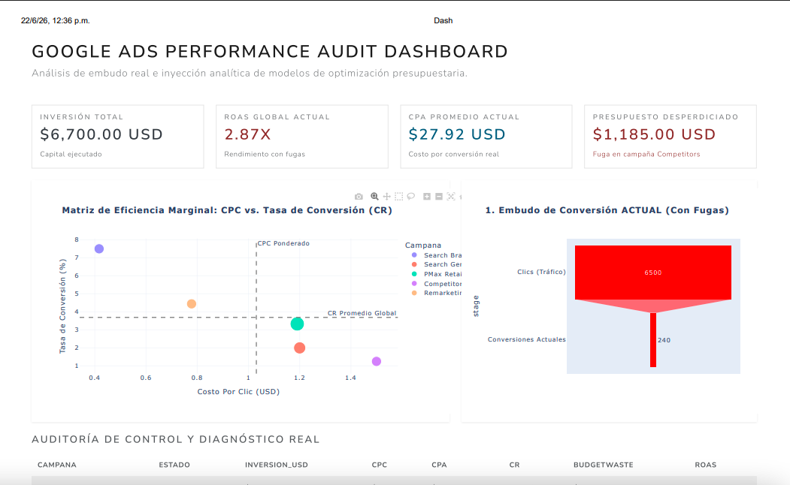

Case study · Google Ads
Stalled ROAS in Google Ads: a predictive audit to invest smarter, not more
A poorly allocated budget is not the same as an insufficient one. This case shows how to reallocate investment without spending a single extra peso.
The problem
The account had a common problem that is hard to see without a deep audit: ROAS had stalled and the budget was not allocated according to each segment's true performance. Part of the spend went to low-return campaigns while the best performers were budget-limited.
The work
- A full account audit: campaign structure, ad groups, keywords, search terms, ads and bidding strategy.
- Building an evaluation model with predictive analytics techniques to identify which combinations of campaign, audience, device and time of day had the greatest conversion potential.
- Reallocating budget toward the best-performing segments, with gradual cuts in low-return areas.
The goal was not to spend more, but to make every peso invested work harder.
The result
Higher ROAS, lower cost per acquisition and more efficient spend, concentrated on the campaigns and audiences with the highest real likelihood of generating sales.

Has your Google Ads ROAS been stuck for months?
I can audit your account with a predictive analytics model that shows where to reallocate your budget, with no need to increase spend.
Talk to Daniel on WhatsApp